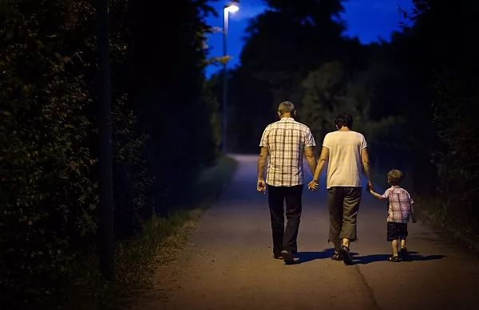
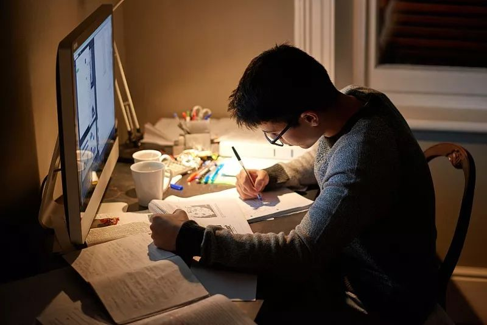

“我是不是感染了新冠肺炎”，你也在问吗
原文链接 备份链接 澎湃新闻记者 陈斯斯 “‘我是不是感染了新冠肺炎？’这个是线上问诊出镜率最高的问题。”2月17日，上海市同济医院精神医学科医生刘飞这样告诉澎湃新闻记者。 这些天，同济医院接到了大量的网络、电话和门诊等线上和线下的求助和 …

克莱·舍基写过一本书，名叫《未来是湿的》，他在书中提到，「在互联网和云计算的作用下，人与人之间恢复了部落社会才有的湿乎乎的关系，充满人情、关注意义、回到现象、重现具体。」
在疫情发生的当下，舍基的判断成了现实。当社会关系被路口、房门、车站阻断开来，个体成了孤独的原子。线上的交往关系，为我们展开了互相支撑的可能性。不具名的普通人也可以通过网络，触达另一个人的内心，告诉对方，我们可以是彼此的安全依靠，等到下一个春天。
疫情如同一场黑风暴，席卷了数以万计的普通人。在这冰冷残酷之外，还有同样普通的人在努力地钻木生火，用温暖的火光烘热这片土地。这里讲述的是他们的故事。
文***｜*******林念
编辑***｜*******槐杨
1
早晨7点，窗外还是一片灰色，靓靓就从床上爬了起来，按着顺序，给近10个人发去消息——早上好，该起床啦。
赴国外读研前的间隔年，靓靓在网上找了这份工作，在「作死杂货铺」任兼职监督员。这家淘宝网店在2015年开张，只卖一个商品：「坚持」。顾客下单后，给监督员发去自己制定好的计划，监督员则会要求顾客提交图片或视频来「打卡」，监督他们是不是按照计划去行动。
新冠肺炎爆发以来，几乎所有人都被锁在家中，「作死杂货铺」的订单量涨了一倍。找到这家店的人身份各异。有白天巡逻、晚上备战雅思的机关工作人员，有在家录网课的老师，还有抖音上拍摄视频的博主。看来，居家时期，大家都需要有人监督、鼓励，打败拖延症。还有一位作家找到靓靓，希望她能监督自己写作，每写完500字，靓靓就会和他在微信上互相道贺。
下单的人中，学生最多，尤其是高三生。缺了学校里集体奋发的氛围，他们需要有人唤醒自律。一位高三女孩在B站开了个直播间，每隔一段时间，靓靓就进入直播间观察她。她安静地坐在书桌前，桌上放着一个计时器，靓靓可以通过计时器判断她是否达到了约定好的时长。摄像头照见女孩在课桌前做作业的侧面，看不见脸，手臂偶尔摆动。她将保持这个姿势，持续12个小时。
「这些孩子真的很不容易。」靓靓说，备考压力已经喘不过气，现在还要加上疫情变化造成的焦虑、在家中与父母产生的摩擦。每当监督结束，靓靓约定的工作已经完成，可是她忍不住想要安抚和鼓励他们。
「今天的状态怎么样？」「会觉得吃力吗？」她经常问。三言两语，她还会分享自己以前备战雅思考试的经验，或者变着方式鼓励他们坚持下去，「大家都在努力，你怎么可以偷懒去当咸鱼呢？」
她的顾客中有位男孩，父母离异，他独自住在租来的房子里，准备专升本考试，每天攻读14个小时，书本温习完，他会跟靓靓聊天，聊起父母离婚时的细节，还有未来的梦想。他说，觉得高数最难，靓靓给他发去消息，「种一棵树，最好的时间是10年前，其次就是现在。」
「这个时候监督员要多给一些鼓励和肯定。」靓靓说。「有时候，我就陪他消化完，陪伴也很重要。」
疫情令人失去了太多面对面的交流机会，漫长的隔离中，人会有孤岛一般的感觉，但还有很多像靓靓这样的人，在线上发起行动，正像在孤岛间奋力划船，开始人与人之间的互相救援。

2
这个2月的某个夜晚，9点钟，住在深圳的玖妹打车回家，看见两旁住宅楼里的灯光明明灭灭，街上却空空荡荡，没有了往日的热闹。路边的LED显示屏上打着振奋人心的标语「众志成城，一起抗疫！」她在后座上不停流泪。
2012年开始，玖妹因为售卖晚安短信而为人熟知。在她的淘宝店里，一条晚安短信售价1元，下单后，临睡前，你可以得到一条向你道「晚安」的信息。显然，玖妹是个浪漫的人。她曾经在广州的一个小岛上开了一家咖啡店，顾客可以用自己的故事换取半杯咖啡。后来小店关了，她回到深圳，做起了体制内的工作，日子本来是安稳的，但她没有想到，这场疫情中，深圳成了广东省确诊病例数最多的城市。她的家人多数在医疗和交通系统内工作，都守在一线，她担心，也有点恐惧。
那几晚，玖妹瘫坐在床上，盯着手机屏幕，打不出一个字。晚安短信间断了好几天，在巨大的灾难面前，她想不出什么样的话语可以应对。
但订单在增加。1月24日，一位顾客下单了两周的晚安短信送给自己在武汉的朋友，在订单的备注里，她告诉玖妹，希望武汉被隔离的朋友收到短信后能知道，自己不是一个人。另一位顾客一口气下了3个订单，分别送给3个朋友，「希望他们能在疫情中照顾好自己，一起坚持下去，还要提醒他们戴口罩」。
因为这些订单，玖妹恢复了过来，有了安慰他人的气力。在给武汉朋友发去的短信中，她分享生活中的趣事，比如看到月色很美，她会在短信里提醒另一端的人，「你抬头看一下月亮吧」。有时候她收到回应，「对啊，月亮好美」。有人给她发来照片，照片里，一圈光环围绕着圆月，「送你一个飞碟。」
6岁的儿子看到玖妹在床上发短信，问，「妈妈，你为什么给他们发短信？」「如果没有收到这条短信，他们会睡不着。」玖妹说。
在疫情带来的紧张和焦虑中，玖妹希望能让多一个人安然入睡。「晚安」，虽然已经被用得太多，在此时还是像一个真实的、切身的祝愿。睡得安然，第二天才有继续面对的精神与力气。在给予他人祝福的过程中，玖妹觉得自己心中由疫情带来的担忧也在缓缓消化。借由一条简单的短信，她走到每一个具体可感的人面前，给予他们温柔的、抚慰的力量。
「我不是心理学专业的，只能做到陪伴和倾听。在苦难中，人需要安慰。『晚安』这两个字不一定能改变什么，但我有这个信心，会过去的。最近我也在读心理方面的书，希望自己能够更专业地去开导他们。再提升一点点，也许在这场疫情中我就可以做得再多一点点。」玖妹说。

3
更为专业的心理援助正在网络中同时进行。
除夕以来，心理咨询师黄晶没有休息过。她回到东北老家，闷头在房间里工作。电脑烧坏了一台，每天只顾得上吃一餐饭。她是天猫店「壹点灵」的运营负责人，在疫情以前，这家店为顾客提供付费心理咨询。除夕那天，「壹点灵」开通了免费的心理援助，分3批招募了500名心理咨询师志愿者。
和其他心理援助热线不同，「壹点灵」没有电话号码，只设置了二维码入口。在正式进入咨询以前，咨询者要对自己的身份进行归类。红色是一线医护人员与确诊病患，橙色是警方人员和疑似病例，蓝色是其他存在焦虑、睡眠障碍的普通人群。
这是黄晶和其他咨询师连夜赶制出来的特别通路，订单会将顾客自动划拨到对应颜色的咨询师团队，进行一对一咨询。针对只想宣泄情绪的来者，他们设置了「一键倾诉」入口。一通电话通常持续30到50分钟，黄晶必须抓紧时间，修补咨询者的心理创伤。
红、橙、蓝的比例是1：1：8，大部分人咨询，是因为自己陷入了疫情带来的焦虑。「现在的疫情对于个人来讲，焦虑可能也就是6、7分，但为什么我们总感觉到10分的焦虑？因为存在信息超载，每天都在刷新闻，就会把焦虑放大了。」
一个武汉女孩下了订单后，黄晶给她回拨了电话。她和母亲同时感染了新冠肺炎，属于轻症，没有床位。为了不让父亲感染，母女俩从家里搬了出来，住进宾馆。在电话里，女孩平静地谈论自己和母亲的困境，黄晶知道，愈冷静，电话那头的人愈是绝望。在社区、医院这些社会资源都被否定后，黄晶转换了方向，调整女孩堪忧的心理状态。「不能让她在这样的情绪里越陷越深，我们要调动她和母亲求生的可能。」
「我们是强者，只不过是病了。」黄晶提醒她，「只不过是周遭的环境让你觉得自己是一个弱者，失去了希望。」黄晶和女孩聊起了女孩母亲的往事，如何从农村到城市里打拼买房，结婚成家。「其实你妈妈是有能量的，她很坚强。你要给她力量，多和她聊聊未来的事，你们坚持下来。」
一位民警也下了单。在武汉边界的一个交通枢纽，他负责检查过往车辆，每当车窗玻璃摇下，他都很紧张，不敢用力呼吸。他的妻子因为扁桃体炎发烧了，4个月的孩子需要照顾，但他也不敢抱孩子，怕把外界带来的病毒传染给孩子。他时常吃不上饭，每时每刻都在焦虑之中。
「真的是辛苦你了，我们在外围的这些咨询师们，都非常感谢你。」黄晶给他打了电话说。话音刚落，那头就传来粗重的哭声，绷着的弦突然有了松动。
黄晶告诉他，妻子检查发现是扁桃体炎，没有确诊，说明你也很有可能没有被感染；你也可以在线上找医生问诊，办法还是很多的。
「他需要肯定，需要被人看到。我们只是告诉他一个简单的事实，帮助他看到焦虑发作时忽略的细节。」
黄晶的心理咨询还在继续。最初，他们只开通了面向湖北的免费咨询，后来，这一项目面向全国展开，迄今共接到了超过14000个咨询者的求助。在黄晶看来，这场疫情的心理援助工作现在才迈出了第一步。疫情的影响是深远的，针对不同程度的创伤进行心理重建，将是疫情过后心理咨询师要做的事。
在激励、安抚之后，那些无法淌过这条冰河的人，需要黄晶等心理咨询师加以专业的疏导。灾难面前，有人耻于表达情绪，有人抗拒外人的介入，心理咨询师们能够以合理、适当的方式让他们最大程度地敞开自我，治愈伤痛。
44
12岁男孩小伟对这个春节期待已久，但疫情来临，把他所有的游玩计划都搅黄了。待在家里，防盗网把窗外的世界分割成小块，他觉得一切都那么无聊，而爸妈总是对他的一举一动都加以审视，而后就是批评。趁父母不注意，他划动手机，在淘宝搜索一种早已被禁售的商品，反复问询客服是否还有其他渠道可以购买到。
那个早上的9点钟，武纲接到了网店客服的电话。每次接到这样的电话，武纲都很紧张。他知道，每通电话都意味着他要抓紧时间，去挽救一条生命。
武纲是阿里安全、阿里健康和客服团队共同推出的「守护生命」项目中的一员，他日常的任务是及时发现和劝阻那些有自杀倾向、准备购买商品用于轻生的人。
沟通安抚、联系亲友、警方协作……这是一套基于人工智能技术和各方协同合作的救助机制。
武纲说，以往，春节假期少有人会在网购中表露出自杀的倾向，但在疫情期间，人们的心理健康问题更值得关注。预警往往在凌晨出现，这些买家会问客服一些看似莫名其妙的问题，稍一盘问，他们内心中的脆弱便会暴露在对话框中。
小伟的案例就是其一。武纲在第一时间接到了商家客服发来的预警。团队研判后立刻联系了河南警方。小伟提供的地址模糊，没有具体的门牌号，只有单元，那个单元有100多户人家。迫于疫情，警察无法挨家挨户地敲门询问。他们联动了办公室里的同事，综合了检索来的信息，才找到了小伟的家。
一个多小时后，警察敲开了小伟家的门，父母还一头雾水，知道详情，才感到后怕。警方做了安抚和心理援助之后，给武纲的团队打了电话，告知小伟平安，所有人才安下心来。
类似的案例汇集起来，武纲从中窥见了疫情中人们的心态。闭塞的隔离环境让每个人都心生焦躁和不安，这些危机不仅可能发生在心智不成熟的青少年身上，成人也难逃阴霾。
「我在你们店买了东西，已经吃了50天，我会不会死？能不能告诉我些解救的办法？」一位买家找到一家店铺客服问，「邻居都要帮我打120了。」
「你吃了什么？能不能留个联系方式？」询问都没有得到回复。商家转而向阿里安全发出预警求助。最后警察上门后，才知道那是买家一时冲动的话语。她端坐在家里，很不好意思：「我只是情绪不好，在家待久了很烦躁。就是一时的情绪发泄，没想到你们真的上门来了。」
不论是出于一时冲动的情绪宣泄，抑或是悲痛达到了一定量级，疫情之下，人们的心理健康同样面临压力。
靠订单预警的拯救是一次性的，武纲更想打捞疫情中脆弱的人心。曾经有位香港买家在和商家的沟通中暴露了自杀倾向，异地报警困难，电话也打不通，唯一的联系方式是淘宝账号。武纲创建了一个独立小组跟进这个案例，同事每隔几个小时询问一次他的状况，直到他回应：「放心，我现在是安全的。」
「当一个人得到陌生人持续的关心，他会很感动，他需要这样的关怀让他走出来。」武纲说，团队行动之前，商家也会对顾客的情绪做安抚。
现实中无法化开的情绪死结，陌生人往往慢慢地将其舒展开来。
5
武纲所在的阿里安全，是专门负责处置各种风险的部门。当疫情来临，商品管理团队全员投入到防疫用品订单暴涨几千上万倍的应对中；反诈团队在浙江全省范围内发送了超过1000万条疫情诈骗强制提醒信息；安全技术团队里三个工程师，则在被隔离期间试图用他们的专业去改造疫情防控环境，安抚人们在疫情中焦躁不安的心。
大年初一，得知武汉封城，南歌带着妻子和两个孩子坐火车硬卧，从湖北襄阳逃离回了杭州。15个小时的火车上，他几乎彻夜未眠。封闭的火车车厢颠簸晃动，乘客来来往往，相互投射怀疑、恐惧的目光。他只能尽可能地搂紧孩子，一直睁眼到凌晨5点，火车停站。火车上惶恐的一夜，让他深切体会到在公共场所提前发现、预警高危人群的重要性。
尘埃按照惯例把父亲从荆州老家接到杭州过年，一家人被隔离两周之后，老人至今还没出过楼门。但他发现，虽然小区已经安排众多人力来防控疫情，但细微处，还是有让狡猾的病毒逃脱的风险。「如有自动化识别工具，意义就很大。」
1月29日，书芮和家人从国外度假回国，航班落地后他才知道同机有武汉籍乘客需要排查。5天后他开始反复发高烧。被120送到杭州西溪医院，做完CT又做了两次咽拭子核酸检测，最终被确诊为普通感冒，拿着两盒消炎药被送回了家。
书芮曾经认为控制疫情最重要的就是在家隔离。这次入院的经历让他有了一些别的想法：停止人群流动，可能无法从根本上解决问题。「如何让人群安全的流动，或许才是疫情防控的最大意义。」
分别在杭州的家中隔离，三个人决定一起做点什么。从2月1日开始，他们和所在团队一起，只用了11天，研发出一套可以快速部署在社区、机场、火车站等场所，助力公共场所的疫情防控的系统。
借助热成像识别和红外技术，这套系统可以同时对多人进行测量体温、佩戴口罩识别及预警和追踪高危人群。也就是说，它能够实时检测到移动人员的体温，还可以识别出他们有没有戴口罩。
南歌忘不了火车上的惊魂一夜，和人们把同类视为敌人的戒备神情。在书芮和尘埃看来，他们在隔离期间所作的努力，为疫情防控提供一些能力之外，也能化解人们内心深处对未知的恐惧。
不论是靓靓、玖妹、黄晶、武纲还是安全工程师们，他们都是芸芸众生里的普通一员。这些普通人聚集起来，合力编织出一张绵密有力的网，试图托住那些在这场疫情中惴惴不安的人。
前线的医护人员在努力医治病患生理上的疼痛，后方的普通人们也在尽其所能，治疗和守护那些被肺炎阴影笼罩的心灵。怀抱希望，当每个普通人都挥舞着手里的灯筒，相助守望，隔绝的孤岛也将连成大陆。
没看够？
长按二维码关注《人物》微信公号
更多精彩的故事在等着你

原文链接 备份链接 澎湃新闻记者 陈斯斯 “‘我是不是感染了新冠肺炎？’这个是线上问诊出镜率最高的问题。”2月17日，上海市同济医院精神医学科医生刘飞这样告诉澎湃新闻记者。 这些天，同济医院接到了大量的网络、电话和门诊等线上和线下的求助和 …
原文链接 备份链接 如果你发现自己每天接触的关于疫情的信息，超过你每天接收总的信息量的40%，也就是说你大部分的时间都在接收这些信息，并且因此干扰到了自身情绪甚至日常生活，那么你要主动去做点别的事，尽可能把关注点转移到自己日常感兴趣的东 …
原文链接 备份链接 记者/郭慧敏 编辑/石爱华 宋建华 **心理咨询师在接听咨询电话 ** 截至2月5日上午，全国新型冠状病毒肺炎确诊人数已达23696例，死亡491例，治愈859例。 1月23日，武汉关闭离汉通道后，一条24小时心理咨询 …
原文链接 备份链接 凤凰新闻客户端 凤凰网在人间工作室出品 我是一名普通心理咨询师，在武汉有一家心理工作室。我也是一名心理工作志愿者，长期服务于武汉一家三甲医院的危机干预热线工作组。1月24日，大年除夕，工作组取消休假，恢复接听，30几位 …
原文链接 备份链接 “新冠”肺炎像一把刀子，不仅伤及血肉，更剖开了深入骨髓的病灶。清醒的人们必须发出声音，说出真话。今天来信的作者吴俊宇来自江西宜春。在过去一段时期里，伴随全国经济飞腾的大潮，宜春也创造出一幅繁荣景象。不料疫情到来，小城 …